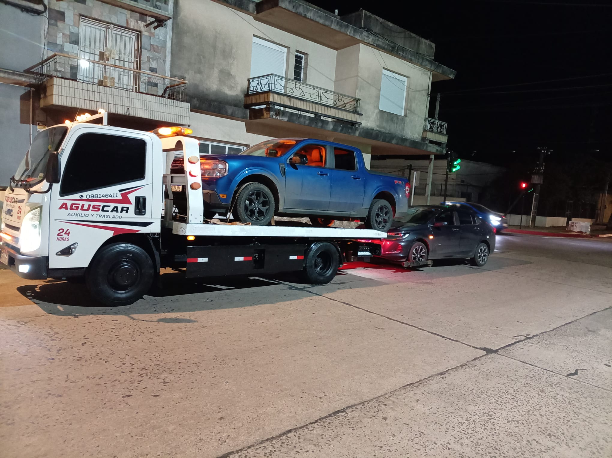

01
Socorro e resgate
Assistência em caso de panes, acidentes ou imprevistos. Entre em contato para organizar o atendimento conforme sua localização e o estado do veículo.
Consultar este serviço


Assistência na estrada · 24 horas
Quando seu veículo para, estamos aqui para ajudar. Dois caminhões próprios e atendimento direto para organizar o socorro ou transporte.
Ligue ou envie sua localização pelo WhatsApp para combinar o atendimento.
Assistência na estrada
Socorro e transporte de veículos
Falamos espanhol e português
Conte o que aconteceu e onde você está. Organizamos a assistência e o equipamento adequado para o seu veículo.
Assistência em caso de panes, acidentes ou imprevistos. Entre em contato para organizar o atendimento conforme sua localização e o estado do veículo.
Consultar este serviçoTransporte e reboque com caminhões próprios. Informe o tipo de veículo, o ponto de partida e o destino para consultar a disponibilidade.
Consultar este serviçoPartida auxiliar de bateria, troca de estepe e reparo de pneu. Também venda e instalação de bateria em domicílio. Consulte o serviço necessário.
Consultar este serviçoDuas opções de assistência para acompanhar você na estrada, com atendimento 24 horas por dia, 365 dias por ano.
Para viajar com tranquilidade.
UYU490/ mês
Mais transportes e mais assistência.
UYU790/ mês
Valores mensais em pesos uruguaios (UYU). Consulte a vigência, as áreas de cobertura, os quilômetros adicionais e as condições de cada benefício antes de se associar.
Consulte também a cobertura Mercosul do plano Gold.
Atendemos em Rivera e Santana do Livramento. Para outros destinos, informe a origem e o trajeto para confirmar a cobertura e as condições.
Informações claras para pedir assistência, conhecer a cobertura e escolher seu plano.
Ligue para +598 98 146 411 ou fale conosco pelo WhatsApp. Informe sua localização, a marca e o modelo do veículo, o que aconteceu e o destino do transporte, se necessário. Você combina o atendimento diretamente com a AGUSCAR.
Sim, oferecemos assistência na estrada 24 horas por dia, 365 dias por ano. Entre em contato para confirmar a disponibilidade e combinar o atendimento. Para atendimento no escritório, consulte o horário previamente.
Sim. Prestamos socorro veicular e organizamos transportes em Rivera e Santana do Livramento. Para outras localidades ou trajetos entre Uruguai e Brasil, informe a origem e o destino para confirmar a cobertura e as condições.
Contamos com dois caminhões próprios para o transporte de veículos. O atendimento depende do tipo, tamanho e estado do veículo: envie essas informações e, se possível, uma foto para confirmar o equipamento adequado.
O plano Básico custa UYU 490 por mês e o Gold custa UYU 790 por mês. Ambos oferecem transportes mensais, quilômetros de resgate incluídos e benefícios de assistência. Compare os detalhes de cada plano e consulte a vigência, as áreas de cobertura, os quilômetros adicionais e as condições ao se associar.
Nosso escritório fica na Celia Bueno de Arizaga 2117, Barrio La Pedrera, Rivera, Uruguai. Atendemos em espanhol e português. Você pode ligar ou enviar uma mensagem antes da visita para combinar o atendimento.
Conte onde você está e o que aconteceu. Combinamos o próximo passo com você.